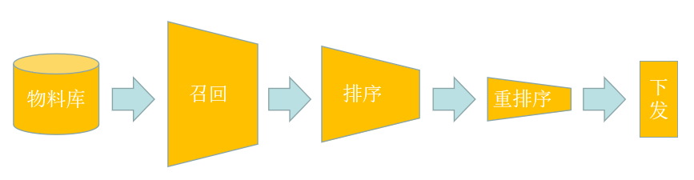
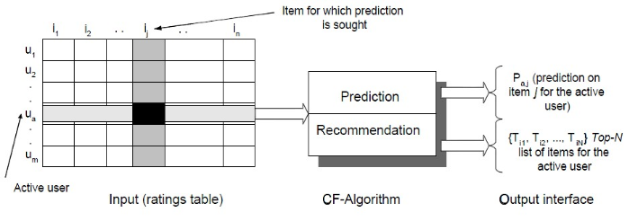
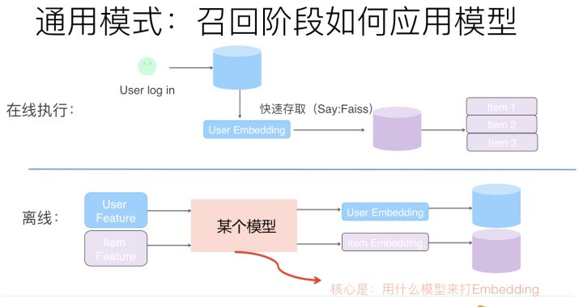
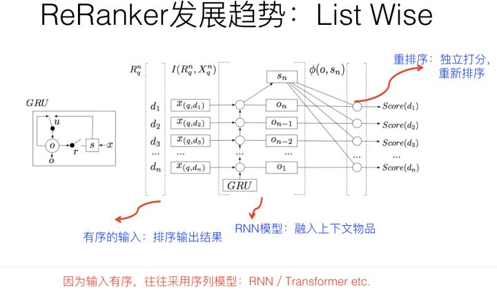

推荐系统主要解决的是信息过载的问题，目标是从海量物品筛选出不同用户各自喜欢的物品，从而为每个用户提供个性化的推荐，实现“千人千面”。本文主要对推荐系统进行概述。
概述
在一个海量物料的系统中迅速的找到用户喜欢的物料是非常困难的，推荐系统很难一次性计算出用户喜好的物品，并且同时满足请求时延、准确性、多样性等评价指标。为了解决上述问题，推荐系统逐渐演变成分层的架构，最经典的就是召回+排序这样的架构。目前也有一些公司在此基础上开发出召回+排序+重排的三个阶段。

召回阶段是指从上百万个物料库中迅速的找到几万个和用户喜好相关的物品，这一阶段看重的时速度，在工程实践中通常分为多路召回。
排序阶段是指从上万个召回的物品中最终确定下发给用户的几十个物品，这一阶段看重的准确性，在深度学习发展的今天往往采用比较复杂的模型。
重排序是指将确定的物品以一个最好的序列进行下发，这一阶段看重的是用户体验，包括多样性、广告感受等因素，通常使用listwise等深度学习模型。
推荐流程
召回(recall)
召回主要根据item和user的特征，从海量的物料库中快速的得到一些用户感兴趣的待选item，这个过程往往是多路并发的，也叫做多路找回。比如对于新闻召回而言，多路可能包括：用户感兴趣的召回队列、热点新闻队列、时效性新闻队列等，通过这样的多路召回丰富多样性。
召回的方法有很多，包括传统的协同过滤，基于深度学习的向量召回，还有现在比较新颖的异构网络的召回等，这里大概的介绍一些召回方法。后续会在论文分析中逐渐介绍一些召回方法。
传统召回方法
协同过滤(CF)可分为基于用户的协同过滤、 基于物品的协同过滤，基于模型的协同过滤（比如MF矩阵分解等）。以基于item的协同过滤为例，其主要思想是：根据两个item被同时点击的频率来计算这两个item之间的相似度，然后推荐用户历史行为中各个item的相似相关item。

在CF中，用m×n的矩阵表示用户对物品的喜好情况，一般用打分表示用户对物品的喜好程度，分数越高表示越喜欢这个物品，0表示没有买过该物品。图中行表示一个用户，列表示一个物品，Uij表示用户i对物品j的打分情况。CF分为两个过程：
- 预测过程：填充u-i矩阵，预测用户对没购买过的商品的可能打分
- 推荐过程：根据u-i评分矩阵来推荐用户可能喜欢的TOP-N个物品
对于传统的user_based CF算法和item_based CF算法，都属于memory CF算法，其核心就是填充完u-i的评分矩阵，也就是预测过程。我们以基于item的协同过滤为例。首先要计算任意两个item的相似度，这里可以使用余弦距离、pearson关联度等来表征。然后对用户未打分物品进行分数预测，可以使用加权求和等方式。最后每一行都填充完毕，取每一行分数最高的N个商品作为召回的结果就可以了。
基于模型的CF算法，就是在预测的过程中，对矩阵进行低秩分解，比如使用SVD等方法，将每个item用一个低维的向量表示，然后就可以计算相似度等工作了。
虽然基于用户的协同过滤召回方法具有简单、性能较高，因此在实际的推荐场景中用途十分广泛。不过也是有天然的缺陷：召回结果的候选集item限定在用户的历史行为类目中，并且难以结合候选item的Side Information（比如brand，品类一些id信息），导致其推荐结果存在发现性弱、对长尾商品的效果差等问题，容易导致推荐系统出现“越推越窄”的问题，制约了推荐系统的可持续发展。
基于深度学习的向量召回
向量召回是目前很多大厂使用的主流方法，其核心思想是将user和item都用向量来表示，然后通过KNN方法（facebook的faiss）来找到相似度最高的top-N个候选结果。

上图是基于深度学习的embedding召回的大体思路，分为离线训练和在线执行两个阶段。离线训练是天级别训练，主要目的是将user和item表征在同一个向量空间下，然后存储起来待使用。在线执行阶段主要是通过Faiss技术针对每个user_id都能够迅速的找到最近邻的top-N个item。
比较经典的论文包括Youtube的单塔和双塔召回模型，后续会有文章详细介绍这些常用的召回模型。
基于图的召回
基于图的召回是未来召回领域发展的一个重要方向，因为在实际场景中，用户-商品天然的构成了图的关系，在这种关系中，尤其以异构图为重点。而基于图的召回基本的基本思想如下：
- 根据复杂的关系构造异构网络
- 对异构网络进行表征学习，得到每个node的embedding向量，存储备用
- 线上serving阶段计算top-N个最近邻商品
因此基于图的召回核心是对异构网络进行表征学习。在这个领域目前有很多的论文，比较经典的包括阿里的 Graph Embedding with Side information、GraphSage、HAN等模型。
排序(ranking)
排序过程是推荐系统中最重要的一个阶段，在这个阶段需要对每个商品计算出CTR，也就是可能被点击的概率。通过CTR对商品进行精确打分，进而从召回的商品中再次缩减，选出高质量的内容，因此排序模型看中的是准确性。
传统的排序模型往往是以ctr作为优化目标，希望用户尽可能点击。但是后来发现单纯的以ctr为优化目标可能会导致低俗内容高优先级，因此通常还会加入浏览时常等目标综合优化。
排序模型有很多，从上古时代的LR到中古时代的GBDT+LR到近现代的DeepFM到现代的DIN、DIEN等，有着充足的发展历程，后续会单独介绍排序模型的演进。
重排序(rerank)
重排序最近几年提出的，因为排序阶段只重视CTR，而忽略了用户的综合体验。因此在重拍阶段，主要是以增强用户体验为主要目的对下发的序列进行重排序，得到一个最优的下发序列。
在这个阶段，以前的做法都是基于强规则来做，比如使用各种策略对下发队列进行去重、打散、强插等操作，来增加推荐结果的多样性，提升用户感知。
但是随着技术的发展，重拍已经逐渐模型化。但是存在很大的问题就是无法确定优化目标和损失函数。比如用户感知、多样性等很难用指标进行量化。在我的实习经历中，接触到的使用listwise模型来进行重排，其优化目标是：是否会处罚下一次刷新、list总点击次数、list总浏览时常这三个目标进行多目标优化。
Listwise模型是跟在精排后面的，作为最后一个下发给用户的模块。因为输入的序列都是有序的，因此一般情况可以考虑使用RNN这个结构来进行建模。

常见问题
冷启动问题
冷启动是新的用户或者新的商品到系统时，之前没有被曝光，因此没有历史数据，在这种情况下，商品很难被召回，用户也很难被精准推荐。
用户冷启动
1、利用用户注册时候的人口统计学特征，比如年龄、性别、地理位置等。
2、利用用户注册时的标签，比如在用户注册时需要用户点击感兴趣的内容等。
物品冷启动
物品冷启动，没用用户的行为特征，就无法进行基于ItemCF的推荐了。
这个时候要使用物品固有属性，新闻的话像一二级分类、兴趣点等等，然后计算物品固有属性之间的相似度，然后进行基于物品相似的推荐。
长尾问题
长尾问题是推荐系统常见问题，指的是80%的商品曝光集中在20%的头部商品中，而剩下的绝大部分商品因为曝光数据少导致很难下发给用户。而这80%的商品正式个性化推荐的重点。
解决长尾问题可以通过调整评价指标，比如在优化目标中加入覆盖率指标。或者优化召回阶段的方法，增加召回商品的覆盖率。